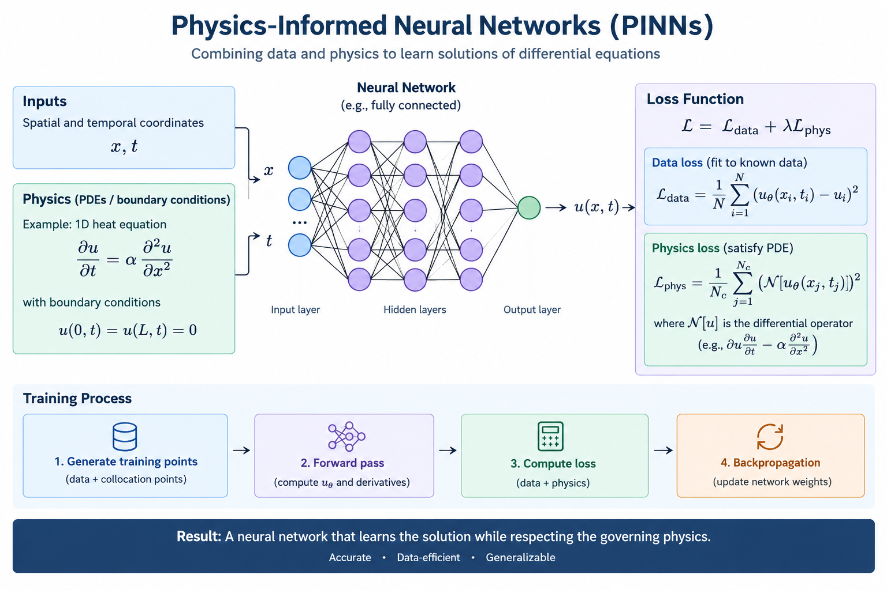

Physics Informed Neural Networks
Published on October 28, 2026
Physics-Informed Neural Networks (PINNs) are a class of deep learning models that integrate physical laws, expressed as partial differential equations (PDEs), directly into the training process.
Instead of relying purely on large datasets, PINNs use the governing equations of a system (like fluid dynamics, thermodynamics, or quantum mechanics) as a regularization mechanism. This allows the network to learn the underlying physics of a problem, even with very little data.

How it works
A PINN minimizes a loss function composed of two parts:
- Data Loss: The standard error between the network's predictions and any available observed data.
- Physics Loss: The residual of the governing PDE evaluated at collocation points, which must be close to zero.
By combining these two, the network is forced to obey the laws of physics, making it incredibly powerful for solving forward and inverse problems in scientific computing.
A full hands-on implementation guide and code example will be available soon in a future article.